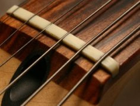
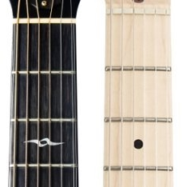
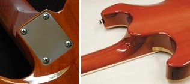
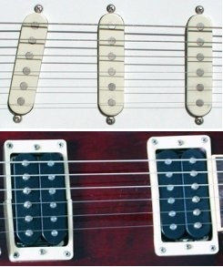
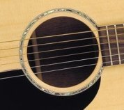
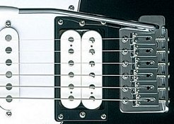
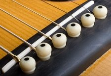
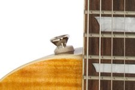

Learn
Parts of the Guitar - Acoustic & Electric
Take some time to learn the parts of the guitar and get to know your instrument!
When learning guitar, I (and other tutors) will make reference to some of the terminology found on this page, so you need to know where these parts are on your guitar and what their function is. It's also useful when shopping for a guitar so you fully understand the specification you're getting.
So, pretty straightforward stuff, but take your time as always.
Guitar Parts Diagram - Main Parts Of The Guitar
As illustrated in the diagram below, the guitar (like humans!) has a head, neck and body...

- The head or headstock is where you tune the guitar.
- The neck is where you hold the guitar in your left hand (if you're right handed) or your right hand (if you're left handed). The neck is also where you press your fingers on the fretboard/fingerboard to create notes and chords.
- The body is where you strum or pick the strings with your right hand (if you're right handed) or your left hand (if you're left handed).
The electric guitar (on the right) pictured above has what are called cutaways in its design - scoops where the neck meets the body. These allow you to reach the higher frets without obstruction from the body. Guitars can have one or two cutaways and acoustic guitars can also have them (typically electro-acoustics).
Individual Parts Of The Guitar - Detailed Breakdown
Let's take a more in depth look at the individual parts of the guitar (acoustic and electric) from head to "tail"...
Headstock
This is where we tune the guitar and where one end of the string gets attached to the guitar.
On a standard six string guitar their are six tuning machines that provide the mechanism to tune each string. To tune the strings up or down you turn the tuning pegs.
There are three main headstock configurations for acoustic and electric guitars...
Connected to each tuning peg is the tuning machine - the mechanism that turns the tuning posts and winds the string, making it tighter (tune up) or looser (tune down). Each tuning post has a hole to thread the string through.
The headstock can also be where you access the truss rod, which runs inside the length of the neck. I won't go into that too much now because it's a more advanced setup option and isn't used very often (unless your guitar is stored in environments with frequent fluctuations in temperature). In a nutshell, the truss rod increases or relieves the bow in the neck, which can help to eliminate fret buzz.
Nut
The nut is responsible for seating the strings as they pass from the headstock on to the guitar neck and fingerboard.
Nuts can be made of bone, plastic, graphite, corian and brass, to name a few.
The strings get seated into the slits in the nut. It marks one end of the vibrating length of the string when plucked, the other end being the bridge.
Neck
The neck, typically made of mahogany or maple, is not the same part as the fretboard (see below). The fretboard is in fact glued on to the neck. When holding the guitar, your thumb will be positioned around the back of the neck.
Fretboard / Fingerboard
The fretboard (also called the fingerboard) is where you "press" the strings to create notes and chords. Along the fretboard are raised metal frets, or fret wires. You press the string(s) down just behind the fret wire to create a particular note or chord.
The most common fretboard materials are rosewood and maple. Maple is the lighter wood and generally produces a brighter, tighter sound.
the fretboard there are often inlay markers, either dots or more elaborate markings positioned at regular fret intervals (usually frets 3, 5, 7, 9, 12, 15, 17, 19, 21 and 24 if the guitar has 24 frets).
Neck Joint
This is where the neck is connected to the body. The neck is attached either through a bolt-on (usually 3 or 4 screws), set-in or neck-through construction. Both set-in and neck-through construction generally improve sustain, although bolt-on is still used on many high end guitars.
Pick Guard
Also known as a scratch plate, the pick guard protects the finish on the body against the scratch of the pick as you strum/pick. They're also used for cosmetic reasons, often a different colour from the body or with a pattern.
Pickups (electric guitars)
The pickups are situated on the body where the fretboard ends. These are the magnetic parts responsible for picking up the string vibrations and translating this into sound through your amplifier. are situated on the body where the fretboard ends. These are the magnetic parts responsible for picking up the string vibrations and translating this into sound through your amplifier.
The pickup closest to the bridge is called the bridge or lead pickup. The pickup closest to the neck is called the neck, rhythm or jazz pickup.
two main types of pickup are single coil (right, top) and humbucker (or double coil). Single coils (traditionally used on Strat style guitars) have a thinner, brighter sound than the fatter, warmer sounding humbuckers (typically used on Les Paul style guitars). Humbuckers are often covered with chrome or brass plates.
The name humbucker comes from the fact they were made to produce less noise than single coils. Literally "bucking the hum".
Tone & Volume Controls (electric guitars)

These are the knobs and switches that control the volume and tone of the signal from the pickups to the output. Guitars commonly have one tone knob per pickup and one master volume. Some also have a volume knob for each pickup.
Electric guitars also have a pickup selector switch so you can choose which pickup(s) to activate.
Guitars with three pickups (e.g. Strats) tend to use 5-way pickup switches. The first position for the bridge pickup only, the second selects bridge and middle, third selects middle only, fourth middle and neck, fifth neck only.
Sound Hole (acoustic guitars)
Acoustic guitars use what is called a sound hole to amplify the sound of the picked or strummed strings. Electro-acoustic guitars also use a pickup and onboard preamp, giving you the option to plug in like you would an electric and use an external amplifier.
Electric Guitar Bridge
Remember how the nut is one end of the vibrating length of the string? The bridge is the other, and is where the string meets the body. On electric guitars, individual saddles support each string after it's threaded through either the body or a tail piece.
Adjustments can be made at the bridge to string height and intonation (more on these setup elements another time).
Some guitar bridges support the use of a tremolo arm (also known as a whammy bar, see pic). The tremolo arm moves the bridge up and down to quickly change the pitch of the strings and back again, producing a vibrato effect or "dive bomb".
An example of a non-tremolo (or fixed) bridge is a tune-o-matic.
Acoustic Guitar Bridge
The bridge on acoustic guitars serves exactly the same purpose - to transfer string vibration to the guitar body. However, acoustic bridges are much simpler. They typically consist of a single piece of wood (e.g. rosewood) and a raised nut-like saddle, over which the strings pass into holes either plugged by bridge pins or fixed within the bridge itself.
Strap Buttons
Simply where each end of the strap attaches to the guitar, usually one at the base of the body, the other at the top of the body near the neck or even on the neck itself.
Strings
I'm sure you know what these are! Strings come in different gauges (thickness) and materials - steel for electric, steel, brass or bronze for acoustic and nylon for classical acoustic.
Gauge is measured in inches. For example, I typically use a .010 inch gauge high E string on my electric. If you hear someone refer to using "10's", they will likely mean a set of strings of which the skinniest string is .010 inches thick.
The most common gauges range from .009 (9's) to .013 (13's) on the thinnest string. The heavier the gauge, the more physical effort is required to press/fret the strings on the fretboard, but the meatier the tone!
I highly recommend D'addario strings - EXL for electric guitars and Phosphor Bronze for acoustic - they have never let me down, they use corrosion-free packaging (not the paper wallets like other brands) and they are reasonably priced.